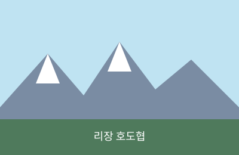
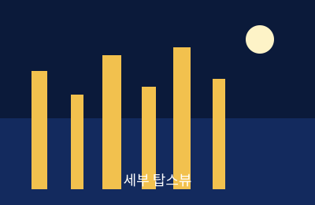
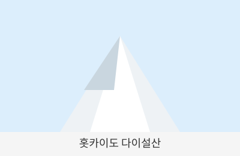

카테고리별 지출 비중(기준 통화 환산)
🌍 나의 여행 앨범 🎵
제가 다녀온 여행지의 사진과 영상, 그리고 여행 중 즐겨 듣던 배경음악을 모아봤습니다.
돌려보는 앨범
🏔️ 리장 호도협
2025년, 중국
🌃 세부 탑스뷰
2024년, 필리핀
⛄ 다이세츠산
2025년, 일본
여행 사진
(사진에 마우스를 올려보세요 — hover 시 카드가 떠오릅니다)

여행 후기 자세히 보기
깎아지른 협곡 사이로 흐르는 강물 소리가 아직도 귀에 생생합니다.

여행 후기 자세히 보기
야자수 사이로 보이는 도시의 야경이 정말 반짝였습니다.

여행 후기 자세히 보기
새하얀 설산의 풍경은 사진보다 실제가 훨씬 아름다웠습니다.
📹 나의 여행 브이로그
📹 영상 설명
리장 여행 중 우연히 마주친 거리 공연 브이로그입니다. 촬영: 2025년 7월
✈️ 여행 계획 관리 TesseraJS
위 3개 여행지와 연결된 실제 예산·체크리스트·날씨·환율 데이터입니다(IndexedDB에 저장).